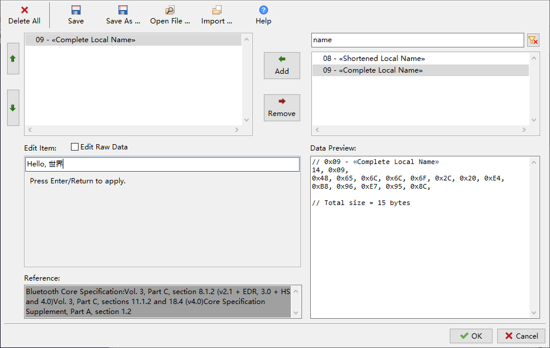

蓝牙开发零门槛之一：Hello, 世界
INGChips 为客户提供易用的 SDK，帮助客户便捷、高效地开发蓝牙产品。

SDK 包含以下 5 大部分。
-
核心工具
提供项目向导、Flash 下载等工具。
-
IDE 集成工具
支持使用 Keil uVersion、IAR Embedded Workbench 等 IDE 作为开发环境。
-
Platform Bundles
针对不同应用场景（如 Mesh 等）提供不同的平台包，每个平台包都包含完整的协议栈及 FreeRTOS。 提供使用芯片外部接口所需的源代码。
-
示例
提供丰富多样的蓝牙设备示例程序，以及相应的 Android、iOS 参考 app。
-
文档
下面演示如何利用 SDK 中的 ingWizard 向导工具快速跟蓝牙开发说“Hello”： 打造一个名为“Hello, 世界”的蓝牙设备。请注意：整个过程不需要编写任何代码。
启动 ingWizard，通过 “Project” -> “New Project …” 菜单打开项目向导。
Choose Project Type
在这一页里，我们：
- 选择 Typical 类型
- 选择要使用的 IDE
- 为项目取一个名字，比如 hello
- 为项目选择保存路径
点击 Next 进入下一页。
Role of Your Device
在这一页里选择 Peripheral，点击 Next 进入设置页面。
Peripheral Setup
点击 “Setup Advertising Data” 按钮，打开蓝牙广播数据编辑器。

输入关键词“name”可以快速定位到需要的 GAP 广播项 “09 - «Complete Local Name»”，点击 Add 将其添加到广播数据中。点击刚刚添加的“09 - «Complete Local Name»”广播项，窗口下面出现 相应的数据编辑器，我们输入“Hello, 世界”，然后按下回车。
广播数据编辑器的右下角是数据预览窗口，可以实时查看完整的广播数据码流，其中附带少量注释， 方便阅读。
点击 OK 关闭广播数据编辑器并回到项目向导。此后一路点击 Next，最后点击 Create 按钮， 我们的第一个项目就开发完成了。
编译
回到 ingWizard 主界面，点击我们刚刚完成的 hello 项目启动 Keil IDE，按下 F7 编译项目。
下载
回到 ingWizard 主界面，在 hello 项目上右键单击弹出快捷菜单，选择 “Download to Flash” 打开 Flash 下载器。下载器里所有设置都已就绪，只需要把下载端口设置一下即可。
程序下载完成后会自动运行，打开蓝牙扫描工具就可以看到我们的“Hello, 世界”设备了。